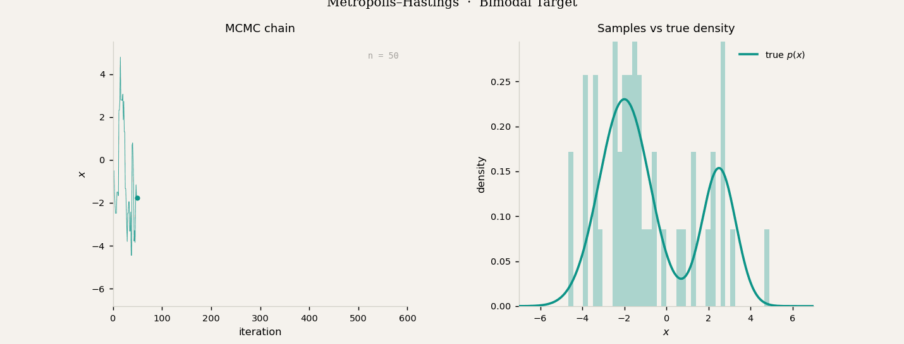
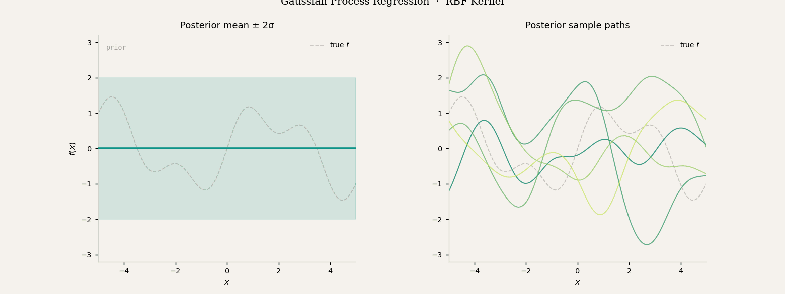
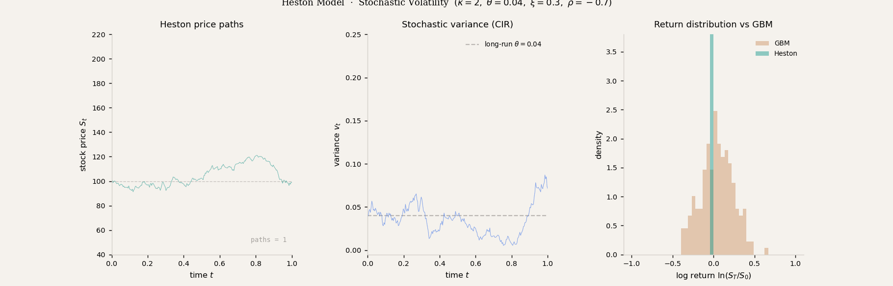

Data Scientist · IIT Delhi · Mumbai
Debrup
Sarkar
[debɾuːp sɔɾkaːɾ]
Working at the intersection of stochastic processes, Bayesian inference, and machine learning — with a bias toward problems where the mathematics is honest about uncertainty.
Data Scientist at a financial institution in Mumbai. MS by Research candidate in Applied Mechanics at IIT Delhi. The problems I find most alive sit at the edge of Bayesian inference, stochastic differential equations, and physics-informed learning — where you cannot get away with being sloppy about assumptions. Particularly drawn to inverse problems: given noisy, partial observations of a system, what can you actually say — and with what confidence? Originally from West Bengal.
Research Interests
The Itô SDE — governing Brownian motion, Langevin dynamics, stochastic volatility, and via the reverse-time SDE, score-based generative models. One equation with an unreasonable number of lives.
Projects
Project Title Goes Here
2–3 sentences: what the project does, what problem it solves, what method was used.
Project Title Goes Here
Description of an SDE-based project or simulation. Include the key result.
Project Title Goes Here
A PINN or inverse problem project. What PDE did you solve? What did the network learn that classical methods could not?
Teaching
Course Full Title
Brief description of what the course covers and your contribution.
Course Full Title
Brief description of responsibilities and topics covered.
Course Full Title
Brief description of responsibilities and topics covered.
Writing
Nothing here yet. When I have something worth saying, it will appear below.
Demonstrations
Short, self-contained demonstrations of ideas I find worth understanding deeply. Code for each is on GitHub.
Bayesian Computation · Markov Chain Monte Carlo
Metropolis–Hastings on a Bimodal Target

The target is a bimodal Gaussian mixture — two modes at different scales, the kind of distribution a unimodal proposal struggles with. The chain starts at $x = 0$ and proposes moves from $q(x' \mid x) = \mathcal{N}(x,\, \sigma^2)$. A proposed move to $x'$ is accepted with probability $\alpha = \min\!\left(1,\, \frac{p(x')}{p(x)}\right)$, rejected otherwise — which means the chain spends time proportional to $p(x)$ without ever needing the normalising constant. Watch the histogram: early frames are noisy and the chain is stuck near one mode; by $n \approx 5000$ the empirical distribution has converged to the true density. The residual roughness at late frames is autocorrelation — consecutive samples are not independent, which is the price you pay for using a local proposal.
Bayesian Nonparametrics · Kernel Methods
Gaussian Process Regression · RBF Kernel

A Gaussian Process places a prior directly over functions: before seeing any data, every smooth function consistent with the kernel is equally plausible — that is the wide teal band on the left panel with label prior. The kernel here is the RBF, $k(x, x') = \sigma_f^2 \exp\!\left(-\frac{(x-x')^2}{2\ell^2}\right)$, which encodes the belief that nearby inputs produce similar outputs. As observations arrive one by one, the posterior contracts: the uncertainty band collapses near data points while remaining wide in unexplored regions. The right panel shows five draws from the posterior — each is a plausible function given the data seen so far. Notice they all pass close to the observations but diverge freely elsewhere. This is Bayesian inference over an infinite-dimensional object, made tractable by the fact that any finite collection of function values is jointly Gaussian.
Quantitative Finance · Stochastic Volatility
Heston Model · Correlated Brownian Motions

Black-Scholes assumes constant volatility — the Heston model relaxes this by letting the variance $v_t$ itself follow a stochastic process. The variance evolves as a CIR process, $dv_t = \kappa(\theta - v_t)\,dt + \xi\sqrt{v_t}\,dW_t^v$, which is mean-reverting around $\theta$ at speed $\kappa$. The two Brownian motions driving $S_t$ and $v_t$ are correlated at $\rho = -0.7$ — the leverage effect: when the stock falls, volatility rises. The right panel reveals what this buys over GBM: the Heston return distribution has fatter tails and a leftward skew, matching observed equity return distributions far better than the Gaussian implied by constant-vol models. The middle panel shows individual variance paths clustering near $\theta = 0.04$ but occasionally spiking — exactly the volatility clustering seen in real markets.
Contact
Open to conversations about research, collaborations on quantitative or ML problems, and opportunities in data science, quantitative finance, or GenAI.
Reach me at [email protected]